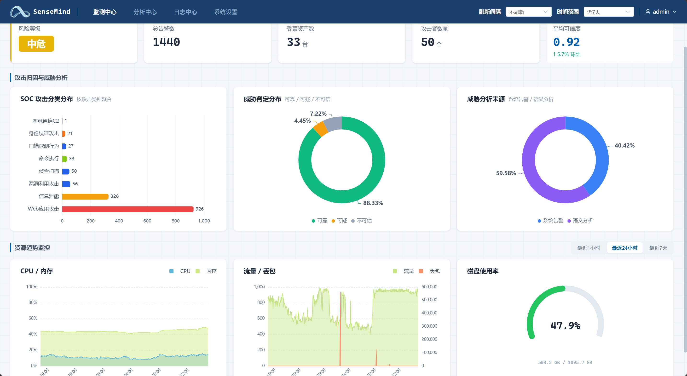
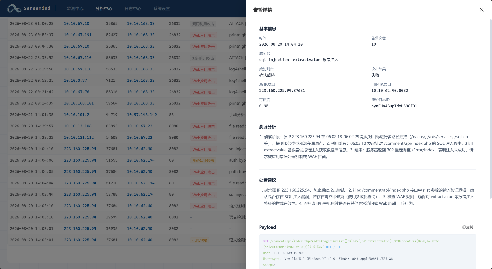
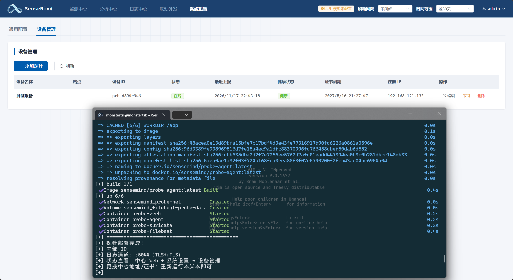
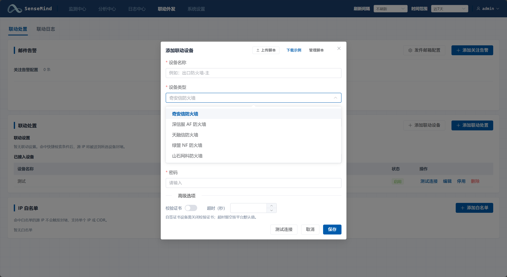

AI 研判与规则自生长
通过 AI 辅助研判攻击脉络，确认的攻击会转化为本地检测规则。沿着「发现 → 关联 → 研判 → 规则沉淀」的闭环，规则检测能力随自身流量持续积累，不依赖外部规则集与人工逐条编写。
- 确认攻击 → 自动生成 Suricata 规则，含精确匹配与动态地址组
- 历史流量回放复核误报，仅保留有效规则
reload-rules热加载生效，规则池持续沉淀
开源 · 自托管 · MIT License
单条告警往往只呈现攻击的一段线索。SenseMind 把 Suricata 告警、Zeek 协议日志与历史事件关联成完整脉络，由 AI 辅助研判；确认过的攻击会转化为本地检测规则，回放复核后热加载生效。检测能力随自身流量积累，不依赖外部规则集与人工逐条编写。




它如何工作
发现 → 关联 → 研判 → 规则沉淀。一次确认过的攻击不仅得到分析结论，也会变成持续生效的本地检测能力。
Suricata 输出告警与 payload，Zeek 输出 conn / http 协议元数据。监听网卡接镜像口（SPAN）、分光器或 TAP。
Community ID 精确关联、源/目的 IP 时间窗口、24 小时历史告警三个维度。Logstash 按 SOC 14 大类打标并映射 MITRE ATT&CK 战术阶段。
五阶段依次执行：标准化 → 研判 → 动态关联查询 → RAG 知识增强 → 输出结论，给出攻击确认、溯源分析、处置建议与 Payload 命中高亮。
生成 Suricata 规则（HTTP sticky buffer 精确匹配 + 动态地址组），经历史流量回放复核误报后写入规则池并热加载，无需重启引擎。
Filebeat → Logstash 主管道：字段裁剪、ECS 转换、SOC 分类 → Elasticsearch soc-*；命中重点分类的告警经 ai-push 管道推送 AI 分析中心。
ai-analyzer/knowledge 内置 MITRE 与 SOC Playbook 基础 RAG 知识库，可持续维护以提高研判准确性；LLM 填写任意 OpenAI 兼容接口即可（vLLM / DashScope）。
研判结论写入 soc-ai-* 索引并由 Web 可视化；规则回写 /data/suricata/lib/rules/，仅加载 combined.rules 与 local.rules。
soc-*soc-ai-* → Web 可视化 / 规则生成 → 热加载
核心价值
通过 AI 辅助研判攻击脉络，确认的攻击会转化为本地检测规则。沿着「发现 → 关联 → 研判 → 规则沉淀」的闭环，规则检测能力随自身流量持续积累，不依赖外部规则集与人工逐条编写。
reload-rules 热加载生效，规则池持续沉淀基于院内既有安全设备，完成多厂商设备与处置通道的整合：防火墙封禁、终端隔离、邮件与工单通知。把「发现 → 研判 → 处置 → 归档」打通为规则触发的全自动流程，替代人工逐条确认处置。
核心能力
五阶段依次执行：标准化 → 研判 → 动态关联查询 → RAG 知识增强 → 输出结论。以 Community ID、IP 时间窗口与 24h 历史告警三维度关联 Suricata 与 Zeek 数据并映射 MITRE ATT&CK，还原完整攻击链路，输出攻击确认、溯源分析与处置建议，研判详情支持 Payload 命中高亮。
不调用 LLM：关键词匹配 + 5 层递归解码（URL / HTML / Base64 / Hex）+ 语法分析（SQL 注释清除、Shell 命令解析、路径规范化、XSS 标签检测），用于捕获编码绕过与变形攻击。
确认攻击后自动生成 Suricata 规则（HTTP sticky buffer 精确匹配 + 动态地址组），写入规则池并热加载，无需重启引擎；经历史流量回放复核误报后仅保留有效规则，检测能力随流量持续沉淀。
覆盖 SQL 注入 / XSS / RCE、Log4j / Struts2 / Fastjson、Cobalt Strike Beacon、DNS 隧道、certutil 滥用、.git 泄露等常见手法。
alert http any any -> any any (msg:"log4j：Log4Shell JNDI LDAP 注入远程代码执行漏洞利用"; flow:established,to_server; http.uri; content:"${jndi:ldap://"; nocase; sid:93134; rev:1;)规则由 AI 生成，含 sticky buffer 精确匹配条件；经历史流量回放复核误报后才保留，避免把一次误判变成长期噪声。
部署与自托管
Docker Engine + Docker Compose V2，一台能收到待检测流量的 Linux 主机，监听接口接镜像口（SPAN）、分光器或 TAP。
git clone https://github.com/monstertsl/SenseMind.git
cd SenseMind
sudo bash deploy.sh <interface> # 流量监听接口，如 eno1np0https://<IP>:8080，默认账号 admin，密码取 .env 中的 ELASTIC_PASSWORD：cat .env | grep ELASTIC_PASSWORD。对外放行 8080 与 5044；5044 默认 TLS + 强制 mTLS，仅接受中心签发的探针证书。
中心「设备管理」添加探针获取一次性 token（24h 有效），探针侧执行 sudo bash deploy-probe.sh <interface> <center_addr> <token>，自动完成镜像口配置、mTLS 注册与全栈启动；幂等可重复运行。注册成功后中心「设备管理」页可查看在线 / 健康状态、证书有效期与注册 IP，规则更新与日志保留天数由中心自动下发。
curl jq unzip openssl ethtoolpatch_yaml.py 中 af-packet 的 threads: 16| 8080 | Web 控制台（HTTPS，所有网卡） |
| 5044 | Logstash Beats 输入（所有网卡，供探针上报） |
| 9090 | AI 分析中心 API（127.0.0.1） |
| 9200 / 5432 | Elasticsearch / PostgreSQL |
Docs & Community
工作闭环、SOC 14 大类、目录结构、日常操作与常见问题（白名单、账号解锁、TOTP 重置等）。
↗支持的设备与响应方式、配置示例，以及如何按厂商官方接口文档自行接入。
↗反馈问题时附上部署方式、监听接口类型、Suricata 版本与相关日志，便于定位。
↗Switch to the English README for the full setup and architecture.
↗sudo docker exec suricata suricatasc -c reload-rules # 热加载规则
cat /data/suricata/lib/rules/local.rules # 查看 AI 生成的规则
curl -X POST http://localhost:9090/api/v1/analyze/<doc_id> # 手动触发分析
sudo python3 scripts/suri_monitor.py -i eno1np0 # 采样排错